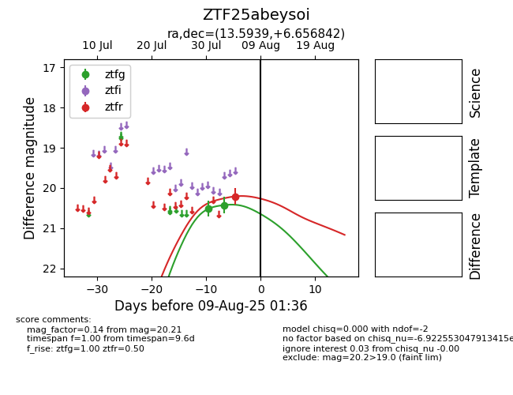

Target ZTF25abeysoi at 2025-08-09 06:37, see:
FINK: fink-portal.org/ZTF25abeysoi
Lasair: lasair-ztf.lsst.ac.uk/objects/ZTF25abeysoi
ALeRCE: alerce.online/object/ZTF25abeysoi
alt names
ZTF25abeysoi (ztf,fink)
coordinates:
equatorial (ra, dec) = (13.5939,+6.65684)
galactic (l, b) = (124.2436,-56.20742)
photometry
last ztfg=20.56, ztfr=20.21
3 ztfg, 1 ztfr detections
